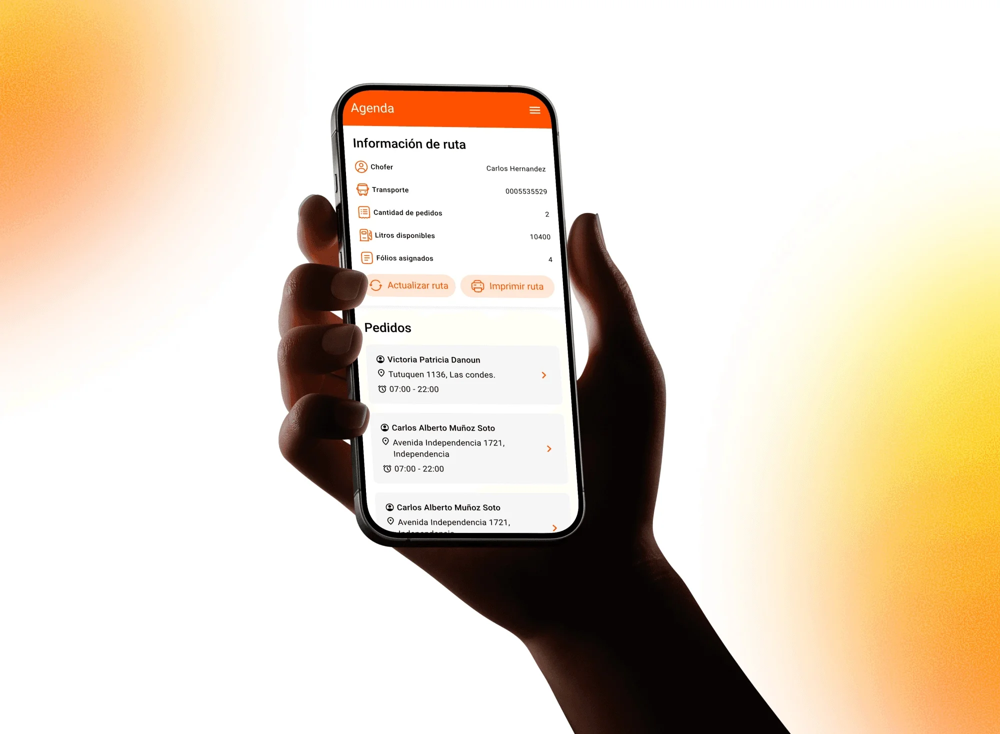
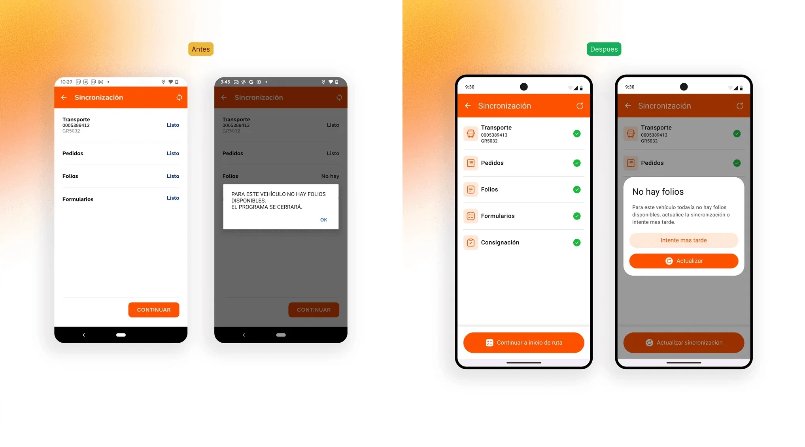
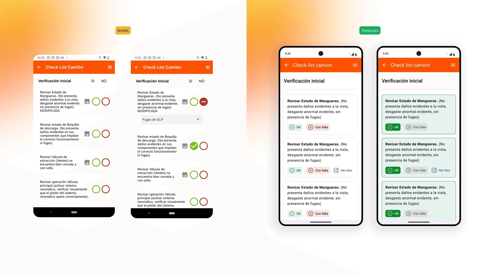
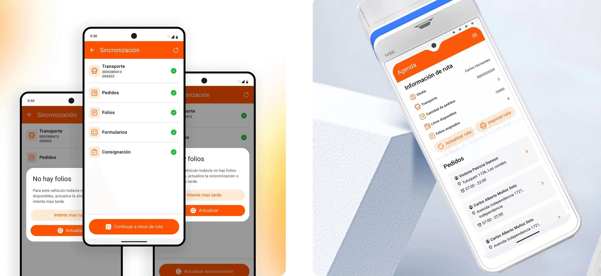

Abastible VGTR
Abastible is one of Chile's largest liquefied gas distributors. VGTR is the app its drivers use to deliver bulk gas on the road: orders, safety checklists and document issuing, all from the truck. The brief was to move that operation from two devices, tablet plus POS, to just one, without touching any of the steps regulation requires.

The problem
The app was designed for a tablet. Moving to the POS didn't change the driver's job: it changed everything else. A smaller screen, one hand busy, sun in your face and a truck that isn't always standing still. An interface that worked sitting down stops working in those conditions.
The failures followed a recognizable pattern. Before heading out, the app made drivers wait without saying what was missing or what to do about it, and when something wasn't available it simply closed. The safety checks, identical every day, ended up being done from memory: the controls were smaller than a fingertip and flagging a problem produced no visible response. And the action a driver repeats dozens of times a day carried the same weight on screen as the ones they almost never use.
The constraint defined the playing field: it's a regulated operation and the steps can't be removed. If the flow can't be shortened, the improvement has to come from somewhere else: from states, from hierarchy and from preventing the error before it happens.
What I did
- UX audit
- Product design
- Interaction design
- Touch accessibility
- Patterns and components
- Developer handoff
Tools
- Figma
- Maze
- Photoshop
- Jitter
- Claude
- ChatGPT
Context
On Abastible's product team.

What I did
I started with a full audit: 6 flows and around 70 screens, ranked by two criteria that don't always agree, frequency of use and operational risk. A screen opened twenty times a day weighs differently from one opened once, but a poorly solved step in a safety checklist outweighs both.
The schedule was redesigned as the hub for getting the work done. The most frequent action, going to the next order, became fixed and always available, and the list was arranged to be read at a glance. What I left untouched was the ability to open any order manually: in the field the route changes, and a design that only covers the happy path breaks on day one.
In the checklists not a single step could go, so I worked on the pattern: controls with a touch target large enough to be used with gloves, over and over; the same structure across every checklist; and an explicit response when a failure is flagged, what it means and what the next step is. Everything was documented with states, edge cases and acceptance criteria per screen.

The outcome
The whole operation now fits on a single device. The redesign was delivered ready to build: 6 flows, around 70 screens, each with its states, edge cases and acceptance criteria, plus a set of reusable patterns that keeps the next screen from inventing its own.
In an operational product, design isn't measured in pretty screens; it's measured in errors that don't happen. An ambiguous state before heading out is a truck standing still; a control that's too small in a safety checklist is a wrong tap on a regulated record. The three core decisions, actionable states, hierarchy by real frequency of use and explicit consequences, go after exactly that.
This project forced me to design with constraints that aren't up for negotiation: regulation, an imposed form factor and a context of use that doesn't forgive. The process couldn't be simplified, so it had to be made reliable. It's the kind of work where design is barely noticed and badly missed when it isn't there.
